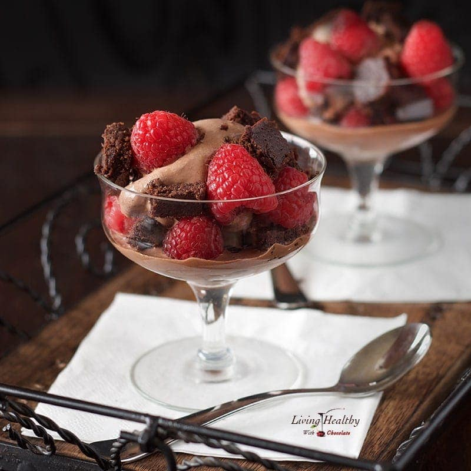

Chocolate Brownie Ice Cream Parfaits

Description
Rasberry chocolate brownier ice cream parfait sans associated deleterious health effects.
Ingredients
- 1 can (403ml) full fat coconut milk
- ▢ ¼ cup raw cacao powder
- ⅓ cup (33g) chopped 70% dark chocolate
- 2 tablespoons arrowroot powder
- 3 tablespoons raw honey
- ▢1 tablespoon vanilla extract
- 3 cups Fresh rasberrries
- Brownies
Steps
- Make or buy brownies, then once cooled chop the brownie into small pieces.
- Make the ice cream: add to a blender all the ingredients in the order listed, except for the raspberries and the brownie pieces, and blend for 30 seconds.
- Place the mixture in an ice cream maker and process it according to the manufacturer’s instructions until it reaches a soft‐serve consistency. Freeze the ice cream for 2 hours to firm up a bit more or serve immediately.
- Layer your serving dishes with the chopped brownie pieces and the raspberries. Add a scoop of ice cream to each dish and serve.